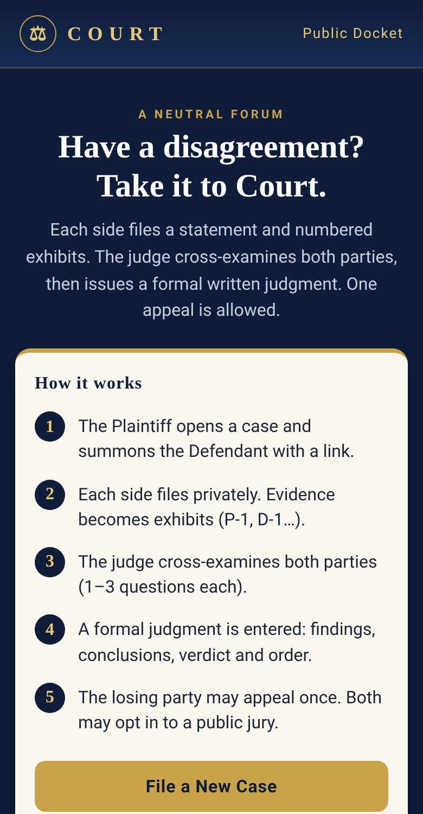
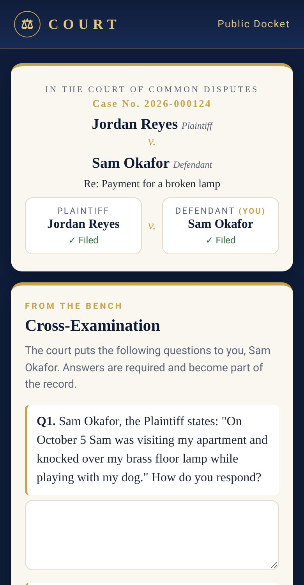
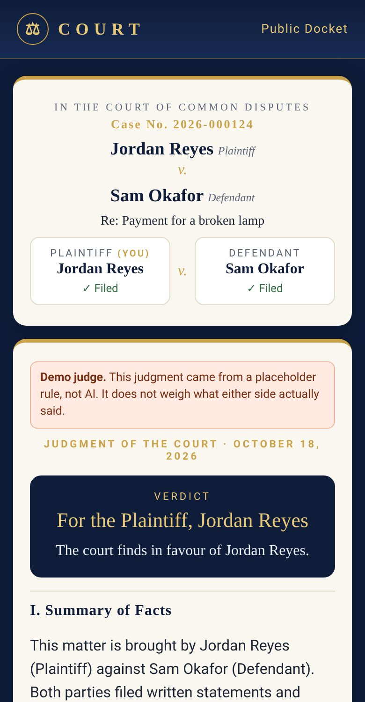
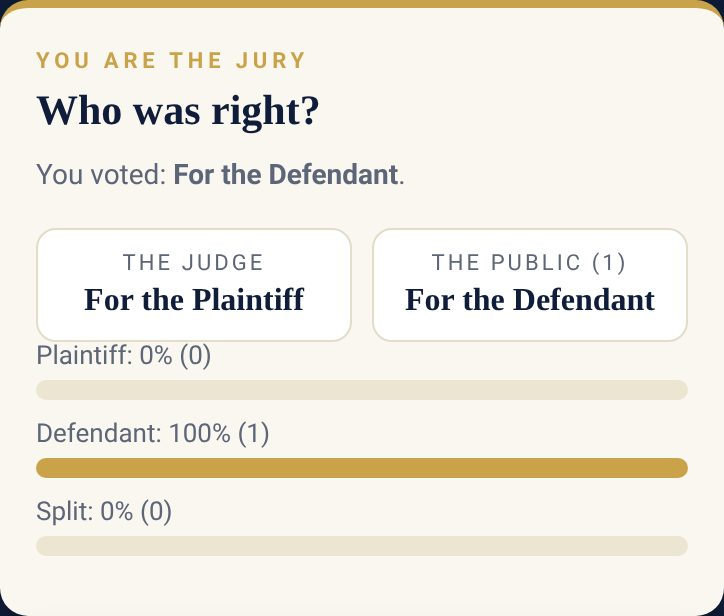
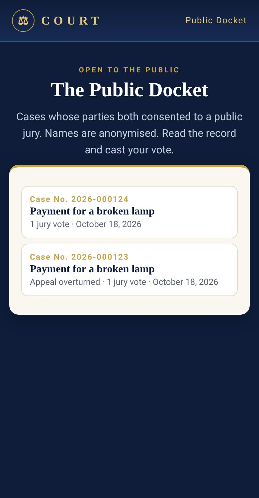

Project overview
Court — AI judge for everyday disputes
A neutral online forum for small disagreements. The Plaintiff opens a case and summons the Defendant by link. Each side files privately with numbered exhibits, the judge cross-examines both, then enters a formal written judgment. One appeal is allowed, and both parties can opt in to an anonymised public jury.
About this page. This app needs its Node.js server (database, AI vision/judge, payments), so it can't run on GitHub Pages. This page explains it with screenshots taken from a local test run using demo data. The full source is in this repository; see README.md.
What it does
- Case numbers, numbered exhibits (P-1, D-1…), 1–3 required cross-examination questions per side
- Formal judgment: findings of fact with exhibit citations, conclusions, verdict and order; read-only share link
- One appeal, with reply or waiver, decided by an Appellate Division
- Optional public jury: anonymised record, one vote per browser, shown beside the verdict on the Public Docket
- AI judge via the xAI API (Grok) when a key is set; otherwise a clearly labelled DEMO judge (not AI)
- Paywall hook built in but switched off
Screenshots





How it's built
Node.js + Express, SQLite (better-sqlite3), multer for evidence images, vanilla JS front end in public/.
Run it locally
npm install PORT=3300 node server.js # optional: XAI_API_KEY=... for the AI judge